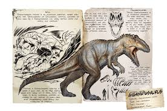
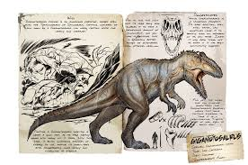
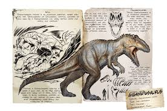

Ark: Survival Evolved (stylized as ARK) is a 2017 action-adventure survival video game developed by Studio Wildcard. In
the game, players must survive being stranded on one of several maps filled with roaming dinosaurs, fictional fantasy
monsters, and other prehistoric animals, natural hazards, and potentially hostile human players.
The game is played from either a third-person or first-person perspective and its open world is navigated by foot or by
riding a prehistoric animal. Players can use firearms and improvised weapons to defend against hostile humans and
creatures, with the ability to build bases as a defense on the ground and on some creatures. The game has both
single-player and multiplayer options. Multiplayer allows the option to form tribes of players in a server. The max
number of tribe mates varies from each server. In this mode, all tamed dinosaurs and building structures are usually
shared between the members. There is a PvE mode where players cannot fight each other unless a specific war event agreed
upon by both parties is triggered.
Development began in October 2014, when it was first released on PC as an early access title in the middle of 2015. The
development team conducted research into the physical appearance of the animals but took a creative license for gameplay
purposes. Instinct Games, Efecto Studios, and Virtual Basement were hired to facilitate the game's development. The game
was officially released in August 2017 for Linux, macOS, PlayStation 4, Windows, and Xbox One, with versions for
Android, iOS, and Nintendo Switch in 2018, a version for Stadia in 2021, and a second, separate Nintendo Switch version
in 2022.
Ark: Survival Evolved received generally mixed reviews, with criticism for its "punishing" difficulty and excruciatingly
time consuming activities, reliance on grinding, and performance issues, particularly on the original Nintendo Switch
version. Several expansions to the game have been released as downloadable content. The game spawned two spin-off games
in partnership with Snail Games—virtual reality game Ark Park and sandbox survival game PixArk. A sequel, Ark 2, has
also been announced in December 2020. In November 2023, remaster Ark: Survival Ascended, was released in early access
for Windows on October 25, 2023, and for PlayStation 5 and Xbox series.
You should learn about Ark stories before playing it.
Here's the all stories about Ark
ARK: Survival Evolved - The Island Lore Explained
ARK: Survival Evolved has grown from a single small island into a rich universe with a complicated storyline. To
understand the lore in all its complexity, players must venture back to The Island, the original ARK map. Scattered
across the map, players can find explorer notes written by the first four survivors of The Island. These explorer notes
are crucial to discovering the storylines of the original survivors, offering clues on who they were and what became of them.
The four authors of The Island’s explorer notes are Helena Walker, a modern-day biologist from Australia; Sir Edmund
Rockwell, a vain chemist from 19th century London; Gauis Marcellus Nerva, a ferocious warrior from ancient Rome; and
Mei-Yin Li, a young fighter from third century China. While all four are different, some do share similarities. For
example, Walker and Rockwell are both scientists fixated on discovering the properties of all living things that dwell
on The Island. However, Rockwell’s sinister nature sets them apart, making Walker more akin to Mei-Yin who has a
surprisingly compassionate nature underneath her fierce exterior.
The Original Survivors
In the beginning, all survivors lived in relative peace with one another, working toward a shared goal of surviving the
unforgiving biomes and terrifying creatures of The Island. However, as Nerva’s tribe “New Legion” grows in power,
tensions between settlements begin to rise. Admired for his intellect, Rockwell acts as a peacemaker between the tribes
and agrees to meet with Nerva and try to calm him. However, upon meeting, Rockwell sees something in Nerva’s plans that
appeals to his own sinister motives and decides to side with him.
After joining forces with Nerva, Rockwell’s private experiments lose their momentum, as his prime test subjects had been
fellow survivors. Faced with expanses of time and nothing to fill it with, Rockwell decides to explore The Island’s cave
systems, thus becoming the first original survivor to discover the artifacts and their mysterious connection with the
three obelisks. Puzzled by this connection, Rockwell summons the help of a tribe called “The Howling Wolves” to help him
locate the rest of the artifacts.
In the beginning, all survivors lived in relative peace with one another, working toward a shared goal of surviving the
unforgiving biomes and terrifying creatures of The Island. However, as Nerva’s tribe “New Legion” grows in power,
tensions between settlements
begin to rise. Admired for his intellect, Rockwell acts as a peacemaker between the tribes
and agrees to meet with Nerva and try to calm him. However, upon meeting, Rockwell sees something in Nerva’s plans that
appeals to his own sinister motives and decides to side with him.
After joining forces with Nerva, Rockwell’s private experiments lose their momentum, as his prime test subjects had been
fellow survivors. Faced with expanses of time and nothing to fill it with, Rockwell decides to explore The Island’s cave
systems, thus becoming the first original survivor to discover the artifacts and their mysterious connection with the
three obelisks. Puzzled by this connection, Rockwell summons the help of a tribe called “The Howling Wolves” to help him
locate the rest of the artifacts.
While New Legion terrorizes neighboring tribes, Walker and Mei-Yin become friends, brought together by Walker’s interest
in Mei-Yin’s pack of tamed creatures. Although Walker later leaves Mei-Yin to join Rockwell in his scientific endeavors,
their trust remains strong. While Mei-Yin is on her own, she encounters a tribe called “Painted Sharks” who are under
threat by New Legion. On the night of the battle, Mei-Yin appears with her army of beasts and defeats New Legion. She is
banished by the very tribe she sought to protect, and while on her own she manages to tame a Giganotosaurus, which she
nicknames the “Demon King.”

Walker reaches a turning point in her findings and realizes that there is something odd about The Island, stating it is
“the opposite of how any ecosystem is supposed to work.” Enriched with Rockwell’s knowledge on The Island’s three
obelisks, she retrieves several artifacts and returns to the “Beast Queen” Mei-Yin, asking for help. Together, they
approach one of the towering obelisks and activate a boss fight, managing to defeat the Megapithecus. Upon returning,
they are ambushed by New Legion and Mei-Yin’s most faithful companion, a black raptor called Muzhui, is killed. Walker
is taken as a prisoner of war.
How ARK: Survival Evolved Can Be Educational
Ignited with a desire for vengeance, Mei-Yin follows New Legion to the Tek Cave portal, discovering that Nerva and his
tribe had located all the artifacts and defeated all endgame bosses. Mei-Yin finds Walker trapped in a cage at the
portal, freeing her and then continuing her revenge mission. When Walker eventually follows Mei-Yin through the portal,
she finds no signs of human life, only a few bits of dried blood.
Ascension
Emerging into what looks like a space station, Walker sees Planet Earth , and The Island contained within a space station
orbiting around the planet. Marked by the absence of Mei-Yin, Nerva, and the rest of New Legion, it is suggested that
they had already ascended by the time Walker arrived within the station. After the discovery, Walker ascends the ARK
too.
For players who manage to survive the Tek Cave and make it to the space station, they will find several rooms open to
exploration, each containing a hologram of Planet Earth. The first hologram depicts Earth as it was during the Jurassic
era, with Pangea as the only continent on its surface. The second displays a modern-day Earth, and the third shows a
dead, barren Earth with red borders and plains. There are also three spawning chambers within the station, each with a
hologram of either a dinosaur or human, suggesting this how they are spawned into the ARK.
Studio Wildcard lays out some solid clues that explain ARK’s origin through the hologram that shows Earth as a barren
wasteland. This suggests the world of ARK may be set in the far future, in a universe that has seen the extinction of
humanity, with ARK’s stations being the only remaining life in the solar system. After players ascend, they are given a
glimpse of an ARKDLC called Scorched Earth, leaving room for a multitude of questions.
If you interested in Ark you can learn about this and watch the other parts of ark. link and trailers given below.


 
